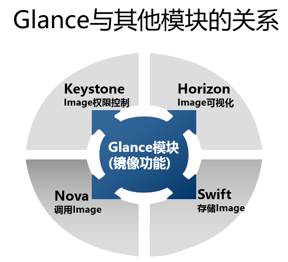
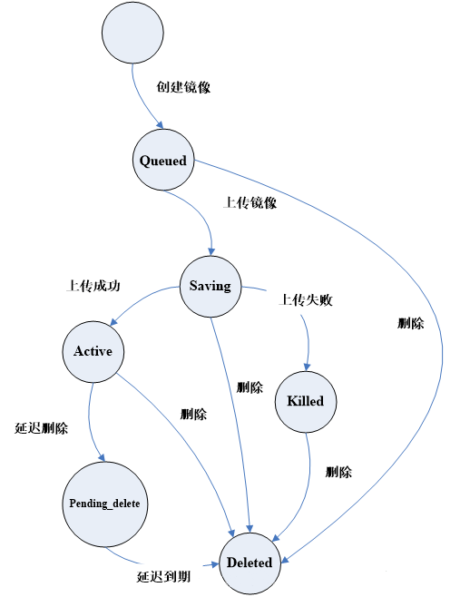
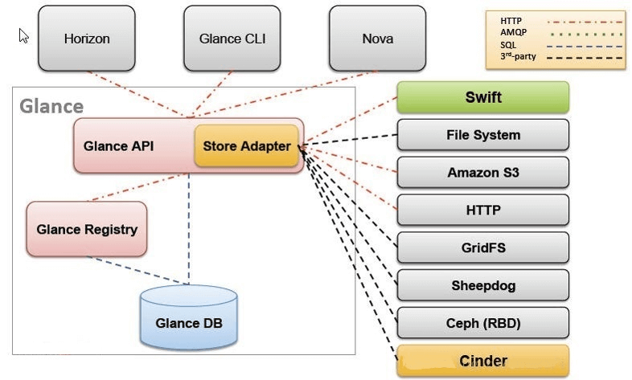
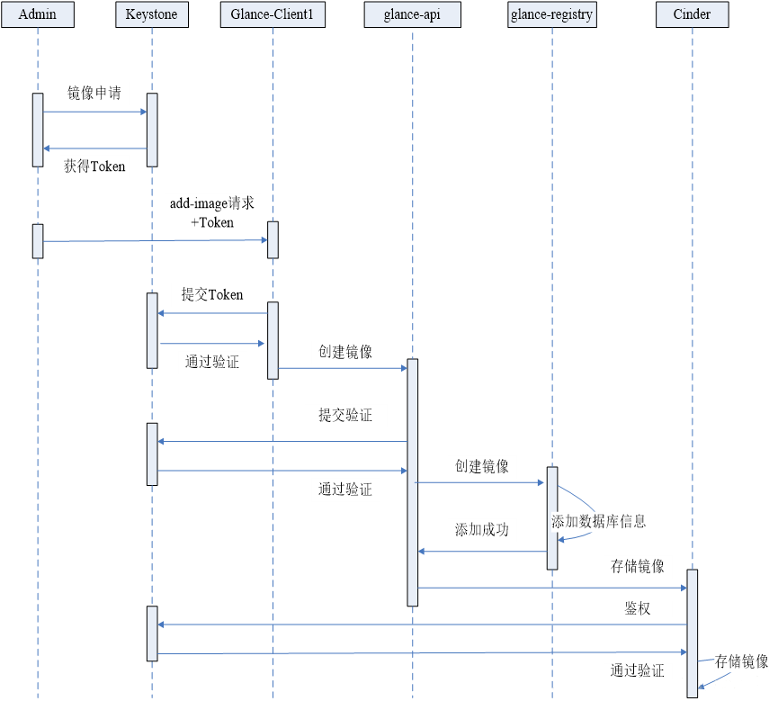
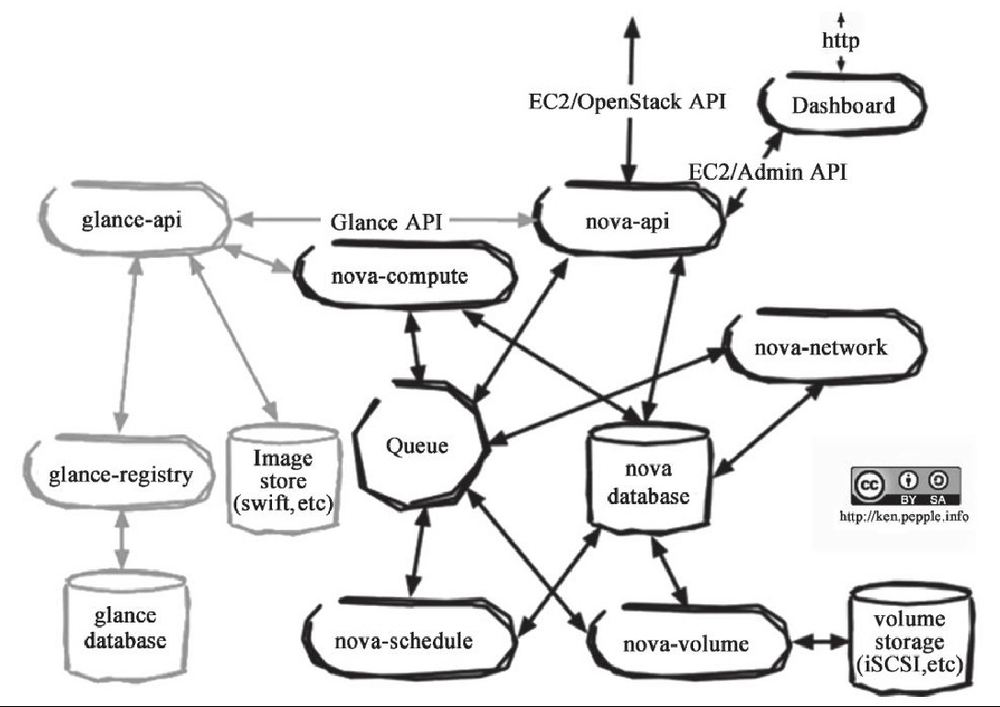
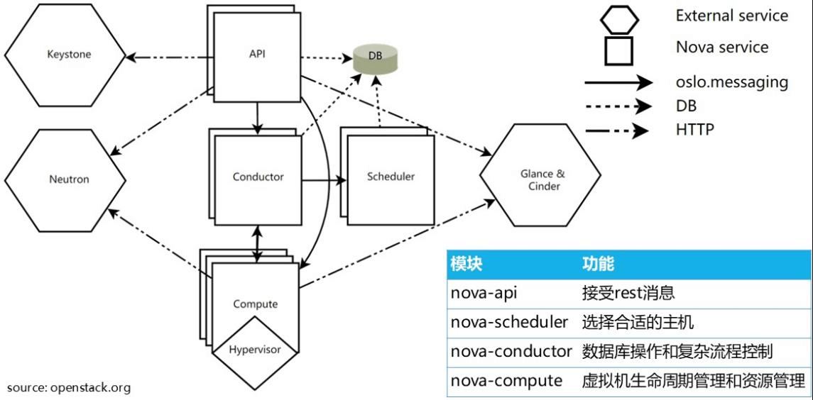
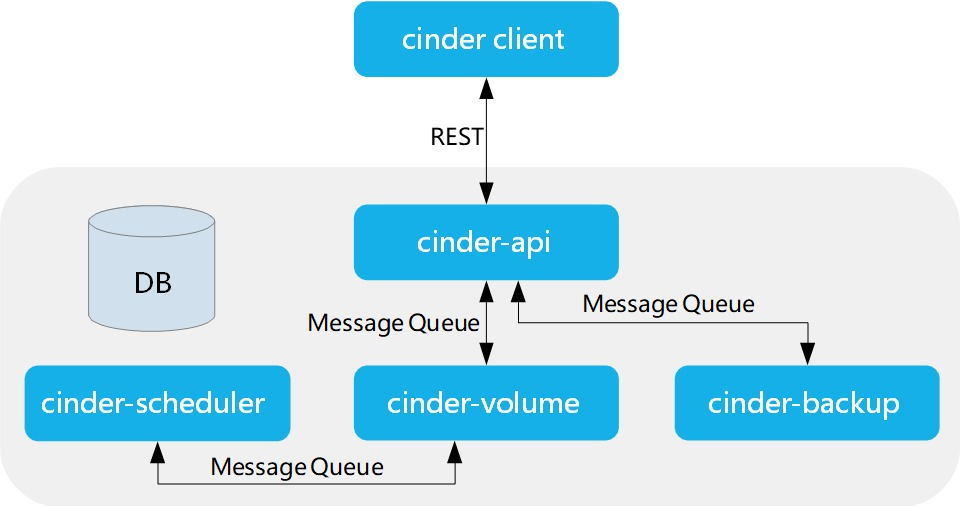

案例描述 本案例共讲述了OpenStack云平台中基础组件与服务的使用，包括Glance镜像服务,Nova计算服务,Cinder块存储服务,Swift对象存储服务的使用方法。具体案例如下：
1.Glance镜像服务：镜像的上传及过程中限制disk和ram；
2.Nova计算服务：创建云主机，开启实例大小调整，和调优操作；
3.Cinder块存储服务：云硬盘的基础使用，创建，挂载，扩容Cinder；
4.Swift对象存储服务：对象存储的基础使用，分片存储。
案例一：Glance镜像服务的基本使用 案例准备 规划节点 节点规划见表1。
表1 节点规划
IP 主机名 节点
172.128.11.13
controller
控制节点
172.128.11.19
compute
计算节点
基础准备 登录物理OpenStack平台，使用云主机搭建的OpenStack平台作为实验节点。
案例实施 Glance镜像服务介绍 Glance是OpenStack镜像服务，用来注册、登陆和检索虚拟机镜像。Glance服务提供了一个REST API，使读者能够查询虚拟机镜像元数据和检索的实际镜像。通过镜像服务提供的虚拟机镜像可以存储在不同的位置，从简单的文件系统对象存储到类似OpenStack对象存储系统。Glance与其他组件的关系如图1-1所示。

图1-1 Glance与其他组件的关系
默认情况下，上传的虚拟机镜像存储路径为/var/lib/glance/images/。Glance负责镜像文件的注册、查询和存储管理。
● glance-api负责接受Image API请求，处理image查询和存储等
● glance-registry负责存储，处理和检索image的元数据(大小，类型等)
● 使用数据库来存储image文件的元数据
● 支持不同的存储仓库来存储image文件，包括swift,本地磁盘，RADOS块设备，Amazon S3，HTTP。
Glance重要概念 （1）镜像状态
镜像状态是Glance管理镜像重要的一个内容，Glance组件给整个OpenStack提供的镜像查询和检索，Glance可以通过虚拟机镜像的状态感知某一镜像的可用状态。如图1-2所示，OpenStack中镜像的状态分成以下几种：
● Queued:Queued状态这是一种初始化镜像状态，在镜像文件刚刚被创建，在glance数据库中已经保存了镜像标示符，但还没有上传至glance中，此时的glance对镜像数据没有任何描述，其存储空间为0。
● Saving:Saving状态是镜像的原始数据在上传中的一种过度状态，它产生在镜像数据上传至glance的过程中，一般来讲，glance收到一个image请求后，才将镜像上传给glance。
● Active:Active状态是当镜像成功上传完毕以后的一种状态，它表明glance中可用的镜像。
● Killed:Killed状态出现在镜像上传失败或者镜像文件不可读的情况下，glance将镜像状态设置成Killed。
● Deleted:Deleted状态表明一个镜像文件马上会被删除，只是当前glance这种仍然保留该镜像文件的相关信息和原始镜像数据。
● Pending_delete:Pending_delete状态类似于deleted，虽然此时的镜像文件没有删除，但镜像文件不能恢复的。

图1-2 Glance镜像文件状态转换过程
（2）Glance基本架构和三大模块
它的设计模式采用C/S架构模式，Client通过Glance提供的REST API与Glance的服务器（Server）程序进行通信，Glance的服务器程序通过网络端口监听，接收Client发送来的镜像操作请求，基本架构如图1-3所示。

图1-3 Glance架构图
● Glance-api：接收REST API的请求，然后通过其他模块（glance-registry及image store）来完成诸如镜像的查找、获取、上传、删除等操作，默认监听端口9292。
● Glance-registry：用于与MariaDB数据库交互，用于存储或获取镜像的元数据（metadata）；通过glance-registry，可以向数据库中写入或获取镜像的各种数据，glance-registry监听端口9191。
● Store Adapter：是一个存储的接口层，通过这个接口，glance可以获取镜像，image store支持的存储有Amazon的S3、OpenStack本身的Swift，本地文件存储和其他分布式存储。
（3）Glance组件的工作过程
如图1-4所示介绍了Glance组件在申请镜像是所与OpenStack平台进行交互的流程图。

图1-4 glance工作过程
创建镜像 （1）下载CirrOS镜像文件
CirrOS是一个极小的云操作系统，可以使用这个小的操作系统来进行Glance服务组件的操作练习。将提供的cirros-0.3.4-x86_64-disk.img镜像上传到controller节点的root目录下面。
1 2 [root@controller ~]# ls cirros-0.3.4-x86_64-disk.img
将镜像上传至controller节点后，通过file命令查看镜像文件信息。
1 2 [root@controller ~]# file cirros-0.3.4-x86_64-disk.img cirros-0.3.4-x86_64-disk.img: QEMU QCOW Image (v2), 41126400 bytes
（2）创建镜像
通过命令创建镜像，命令的格式如下：
1 2 3 4 5 6 7 8 9 10 11 12 13 14 15 [root@controller images]# glance help image-create usage: glance image-create [--architecture ] [--protected [True|False]] [--name ] [--instance-uuid ] [--min-disk ] [--visibility ] [--kernel-id ] [--tags [ ...]] [--os-version ] [--disk-format ] [--os-distro ] [--id ] [--owner ] [--ramdisk-id ] [--min-ram ] [--container-format ] [--property ] [--file ] [--progress]
参数说明：
1 2 3 4 5 --disk-format：镜像格式 --container-format： 镜像在其他项目中可见性 --progress： 显示上传镜像的进度 --file：选择本地镜像文件 --name：上传后镜像的名称
使用镜像cirros-0.3.4-x86_64-disk.img通过命令上传镜像至OpenStack中。
1 2 3 4 5 6 7 8 9 10 11 12 13 14 15 16 17 18 19 20 21 22 23 24 25 [root@controller ~]# glance image-create --name cirros-0.3.4 --disk-format qcow2 --container-format bare --progress < cirros-0.3.4-x86_64-disk.img +------------------+--------------------------------------------------------------------+ | Property | Value | +------------------+--------------------------------------------------------------------+ | checksum | f8ab98ff5e73ebab884d80c9dc9c7290 | | container_format | bare | | created_at | 2022-02-10T03:15:29Z | | disk_format | qcow2 | | id | 32a2513c-e5ba-438b-a5ee-63c35c03b284 | | min_disk | 0 | | min_ram | 0 | | name | cirros-0.3.4 | | os_hash_algo | sha512 | | os_hash_value | f0fd1b50420dce4ca382ccfbb528eef3a38bbeff00b54e95e3876b9bafe7ed2d6f9 19ca35d9046d437c6d2d8698b1174a335fbd66035bb3edc525d2cdb187232 | | os_hidden | False | | owner | 1776912d52a7444d8b2d09eb86e8d1d9 | | protected | False | | size | 13267968 | | status | active | | tags | [] | | updated_at | 2022-02-10T03:15:29Z | | virtual_size | Not available | | visibility | shared | +------------------+--------------------------------------------------------------------+
管理镜像 （1）查看镜像
通过命令可以在OpenStack平台中查看当前glance中所上传的镜像名称。具体命令如下：
1 2 3 4 5 6 [root@controller ~]# glance image-list +--------------------------------------+--------------+ | ID | Name | +--------------------------------------+--------------+ | 32a2513c-e5ba-438b-a5ee-63c35c03b284 | cirros-0.3.4 | +--------------------------------------+--------------+
也可以使用命令查看镜像的详细信息。具体命令如下：
1 2 3 4 5 6 7 8 9 10 11 12 13 14 15 16 17 18 19 20 21 22 23 24 25 [root@controller ~]# glance image-show 32a2513c-e5ba-438b-a5ee-63c35c03b284 +------------------+--------------------------------------------------------------------+ | Property | Value | +------------------+------------------------------------------------------------------ -+ | checksum | f8ab98ff5e73ebab884d80c9dc9c7290 | | container_format | bare | | created_at | 2022-02-10T03:15:29Z | | disk_format | qcow2 | | id | 32a2513c-e5ba-438b-a5ee-63c35c03b284 | | min_disk | 0 | | min_ram | 0 | | name | cirros-0.3.4 | | os_hash_algo | sha512 | | os_hash_value | f0fd1b50420dce4ca382ccfbb528eef3a38bbeff00b54e95e3876b9bafe7ed2d6f9 19ca35d9046d437c6d2d8698b1174a335fbd66035bb3edc525d2cdb187232 | | os_hidden | False | | owner | 1776912d52a7444d8b2d09eb86e8d1d9 | | protected | False | | size | 13267968 | | status | active | | tags | [] | | updated_at | 2022-02-10T03:15:29Z | | virtual_size | Not available | | visibility | shared | +------------------+--------------------------------------------------------------------+
（2）修改镜像
可以使用glance image-update更新镜像信息，命令的格式如下：
1 2 3 4 5 6 7 8 9 10 11 12 13 [root@controller images]# glance help image-update usage: glance image-update [--architecture ] [--protected [True|False]] [--name ] [--instance-uuid ] [--min-disk ] [--visibility ] [--kernel-id ] [--os-version ] [--disk-format ] [--os-distro ] [--owner ] [--ramdisk-id ] [--min-ram ] [--container-format ] [--property ] [--remove-property key]
参数说明：
1 2 3 4 5 --min-disk：镜像启动最小硬盘大小 --name：镜像名称 --disk-format：镜像格式 --min-ram：镜像启动最小内存大小 --container-format：镜像在项目中可见性
如果需要改变镜像启动硬盘最低要求值（min-disk）1G，min-disk默认单位为G。使用glance image-update更新镜像信息操作如下。
1 2 3 4 5 6 7 8 9 10 11 12 13 14 15 16 17 18 19 20 21 22 23 24 25 26 [root@controller ~]# glance image-update --min-disk=1 32a2513c-e5ba-438b-a5ee-63c35c03b284 +------------------+--------------------------------------------------------------------+ | Property | Value | +------------------+--------------------------------------------------------------------+ | checksum | f8ab98ff5e73ebab884d80c9dc9c7290 | | container_format | bare | | created_at | 2022-02-10T03:15:29Z | | disk_format | qcow2 | | id | 32a2513c-e5ba-438b-a5ee-63c35c03b284 | | min_disk | 1 | | min_ram | 0 | | name | cirros-0.3.4 | | os_hash_algo | sha512 | | os_hash_value | f0fd1b50420dce4ca382ccfbb528eef3a38bbeff00b54e95e3876b9bafe7ed2d6f9 19ca35d9046d437c6d2d8698b1174a335fbd66035bb3edc525d2cdb187232 | | os_hidden | False | | owner | 1776912d52a7444d8b2d09eb86e8d1d9 | | protected | False | | size | 13267968 | | status | active | | tags | [] | | updated_at | 2022-02-10T03:16:59Z | | virtual_size | Not available | | visibility | shared | +------------------+--------------------------------------------------------------------+
也可以使用命令更新镜像启动内存最低要求值（min-ram）为1G，min-ram默认单位为M。使用glance image-update更新镜像信息操作如下：
1 2 3 4 5 6 7 8 9 10 11 12 13 14 15 16 17 18 19 20 21 22 23 24 25 [root@controller ~]# glance image-update --min-ram=1024 32a2513c-e5ba-438b-a5ee-63c35c03b284 +------------------+--------------------------------------------------------------------+ | Property | Value | +------------------+--------------------------------------------------------------------+ | checksum | f8ab98ff5e73ebab884d80c9dc9c7290 | | container_format | bare | | created_at | 2022-02-10T03:15:29Z | | disk_format | qcow2 | | id | 32a2513c-e5ba-438b-a5ee-63c35c03b284 | | min_disk | 1 | | min_ram | 1024 | | name | cirros-0.3.4 | | os_hash_algo | sha512 | | os_hash_value | f0fd1b50420dce4ca382ccfbb528eef3a38bbeff00b54e95e3876b9bafe7ed2d6f9 19ca35d9046d437c6d2d8698b1174a335fbd66035bb3edc525d2cdb187232 | | os_hidden | False | | owner | 1776912d52a7444d8b2d09eb86e8d1d9 | | protected | False | | size | 13267968 | | status | active | | tags | [] | | updated_at | 2022-02-10T03:17:21Z | | virtual_size | Not available | | visibility | shared | +------------------+--------------------------------------------------------------------+
（3）删除镜像
可以使用glance image-delete删除上传至OpenStack平台中的镜像，使用命令格式如下：
1 2 3 4 5 6 7 8 9 [root@controller images]# glance help image-delete usage: glance image-delete [ ...] Delete specified image. Positional arguments: ID of image(s) to delete. Run `glance --os-image-api-version 1 help image-delete` for v1 help
只需要在命令后跟上镜像ID即可。命令如下：
1 2 3 4 5 6 [root@controller images]# glance image-delete 32a2513c-e5ba-438b-a5ee-63c35c03b284 [root@controller images]# glance image-list +--------------------------------------+-------------------------------+ | ID | Name | +--------------------------------------+-------------------------------+ +--------------------------------------+-------------------------------+
案例二：Nova服务的基本使用 案例准备 规划节点 节点规划见表2。
表2 节点规划
IP 主机名 节点
172.128.11.13
controller
控制节点
172.128.11.19
compute
计算节点
基础准备 登录物理OpenStack平台，使用云主机搭建的OpenStack平台作为实验节点。
案例实施 Nova简介 计算服务是OpenStack最核心的服务之一，负责维护和管理云环境的计算资源，它在OpenStack项目中代号是nova。
Nova自身并没有提供任何虚拟化能力，它提供计算服务，使用不同的虚拟化驱动来与底层支持的Hypervisor（虚拟机管理器）进行交互。所有的计算实例（虚拟服务器）由Nova进行生命周期的调度管理（启动、挂起、停止、删除等）。
Nova需要Keystone、Glance、Neutron、Cinder和Swift等其他服务的支持，能与这些服务集成，实现如加密磁盘、裸金属计算实例等。
Nova架构 Nova项目最初的源代码由美国国家航空航天局（NASA）贡献，截至Ocata版本，Nova项目已发行了十几个版本，也是社区所有项目中最为成熟和用户生产环境部署率最高的项目。在2010年OpenStack项目成立之初，Nova项目主要分为Nova-Compute、Nova-volume和Nova-network三大功能模块。在2012年9月OpenStack的Folsom版本发行时，社区才将Nova-volume和Nova-network独立出来分别构建了Cinder和Quantum项目（后因商标原因更名为Neutron项目）。Nova服务除了Nova-Compute、Nova-volume和Nova-network三大功能模块之外，还有处理RESTful API请求的Nova-API模块、调度Nova-Compute的Nova-scheduler模块、用以模块信息交互的消息队列系统和配置及状态数据存储的数据库。而在早期的OpenStack版本中，仅有Nova、Swift和Glance三大项目，如果用户不准备使用对象存储Swift，则Nova和Glance项目即构成了早期的OpenStack云平台。如图2-1所示。

图2-1 Nova架构图
在OpenStack的Folsom版本发行后，Nova-volume和Nova-network被独立成为块存储Cinder项目和网络Neutron项目，而Nova自身的功能模块也被不断细分，除了Nova-Compute和Nova-API功能模块，以及消息队列和数据库之外，Nova项目还构建了Nova-cert、Nova-Conductor、Nova-consoleauth和nova-console等模块。块存储Cinder项目和网络服务Neutron独立后，OpenStack中三大核心功能计算、存储和网络项目之间的逻辑架构如如图2-2所示。

图2-2 Nova与OpenStack平台逻辑结构
创建flavor类型 flavor类型为OpenStack在创建云主机时需要提供的云主机大小类型，云主机的资源大小可使用不同的flavor类型来进行定义。
（1）创建flavor类型
1 2 3 4 5 6 7 8 9 10 11 12 13 [root@controller ~]# openstack help flavor create usage: openstack flavor create [-h] [-f {json,shell,table,value,yaml}] [-c COLUMN] [--max-width ] [--fit-width] [--print-empty] [--noindent] [--prefix PREFIX] [--id ] [--ram ] [--disk ] [--ephemeral ] [--swap ] [--vcpus ] [--rxtx-factor ] [--public | --private] [--property ] [--project ] [--project-domain ] Create new flavor
使用命令创建一个flavor，10G的硬盘大小，1G内存，2颗vcpu，ID为1，名称为centos。命令如下：
1 2 3 4 5 6 7 8 9 10 11 12 13 14 15 16 [root@controller ~]# openstack flavor create --disk 10 --ram 1024 --vcpus 2 --id 1 centos +----------------------------+--------+ | Field | Value | +----------------------------+--------+ | OS-FLV-DISABLED:disabled | False | | OS-FLV-EXT-DATA:ephemeral | 0 | | disk | 10 | | id | 1 | | name | centos | | os-flavor-access:is_public | True | | properties | | | ram | 1024 | | rxtx_factor | 1.0 | | swap | | | vcpus | 2 | +----------------------------+--------+
（2）查看flavor类型
使用“openstack flavor list”命令查看flavor类型列表，命令如下：
1 2 3 4 5 6 [root@controller ~]# openstack flavor list +----+--------+------+------+-----------+-------+-----------+ | ID | Name | RAM | Disk | Ephemeral | VCPUs | Is Public | +----+--------+------+------+-----------+-------+-----------+ | 1 | centos | 1024 | 10 | 0 | 2 | True | +----+--------+------+------+-----------+-------+-----------+
也可以使用“openstack flavor show”命令查看具体的flavor类型的详细信息。命令格式如下：
1 2 3 4 5 [root@controller ~]# openstack help flavor show usage: openstack flavor show [-h] [-f {json,shell,table,value,yaml}] [-c COLUMN] [--max-width ] [--fit-width] [--print-empty] [--noindent] [--prefix PREFIX]
通过命令查看创建的“centos”的flavor类型详细信息。命令如下：
1 2 3 4 5 6 7 8 9 10 11 12 13 14 15 16 17 [root@controller ~]# openstack flavor show centos +----------------------------+--------+ | Field | Value | +----------------------------+--------+ | OS-FLV-DISABLED:disabled | False | | OS-FLV-EXT-DATA:ephemeral | 0 | | access_project_ids | None | | disk | 10 | | id | 1 | | name | centos | | os-flavor-access:is_public | True | | properties | | | ram | 1024 | | rxtx_factor | 1.0 | | swap | | | vcpus | 2 | +----------------------------+--------+
访问安全组 访问安全组为是OpenStack提供给云主机的一个访问策略控制组，通过安全组中的策略可以控制云主机的出入访问规则。
（1）查看访问安全组
使用命令“openstack security group list”可以查看当前所创建的访问安全组列表。命令如下：
1 2 3 4 5 6 7 [root@controller ~]# openstack security group list +--------------------------+---------+------------------------+------------------+------+ | ID | Name | Description | Project | Tags | +--------------------------+---------+------------------------+------------------+------+ |896ce430-21f8-4673-8110-af| default | Default security group |1776912d52a7444d8b| [] | ce97e43715 2d09eb86e8d1d9 +--------------------------+---------+------------------------+------------------+------+
“default”为openstack平台自带的安全组，通过命令可以查看安全组中的安全规则，命令如下：
1 2 3 4 5 6 7 8 9 10 11 12 13 [root@controller ~]# openstack security group rule list default +--------------------+-------------+-----------+-----------+------------+----------------------+ | ID | IP Protocol | Ethertype | IP Range | Port Range | Remote Security Group| +--------------------+-------------+-----------+-----------+------------+----------------------+ | 1e6c27ff-b456-4d2a | None | IPv4 | 0.0.0.0/0 | | 896ce430-21f8-4673 | -a64d-51197fea048e -8110-afce97e43715 | 699e2744-e926-4bb4 | None | IPv6 | ::/0 | | None | -9e4f-54885f669bc5 | 7aa363c8-5df3-4ce3 | None | IPv6 | ::/0 | | 896ce430-21f8-4673 | -a775-9e453f086c87 -8110-afce97e43715 | bb08b786-09f4-44f3 | None | IPv4 | 0.0.0.0/0 | | None | -a030-71b189a0f84f +--------------------+-------------+-----------+-----------+------------+----------------------+
在安全规则的列表中，不能看出每条规则的具体策略，通过使用命令“openstack security group rule show”查看规则的详细信息。命令如下：
1 2 3 4 5 6 7 8 9 10 11 12 13 14 15 16 17 18 19 20 21 22 23 24 [root@controller ~]# openstack security group rule show 7aa363c8-5df3-4ce3-a775-9e453f086c87 +-------------------+-------------------------------------------------------------------+ | Field | Value | +-------------------+-------------------------------------------------------------------+ | created_at | 2022-02-10T03:21:40Z | | description | None | | direction | ingress | | ether_type | IPv6 | | id | 7aa363c8-5df3-4ce3-a775-9e453f086c87 | | location | cloud='', project.domain_id=, project.domain_name='000000', project.id='1776912d52a7444d8b2d09eb86e8d1d9', project.name='admin', region_name='', zone= | | name | None | | port_range_max | None | | port_range_min | None | | project_id | 1776912d52a7444d8b2d09eb86e8d1d9 | | protocol | None | | remote_group_id | 896ce430-21f8-4673-8110-afce97e43715 | | remote_ip_prefix | ::/0 | | revision_number | 0 | | security_group_id | 896ce430-21f8-4673-8110-afce97e43715 | | tags | [] | | updated_at | 2022-02-10T03:21:40Z | +-------------------+-------------------------------------------------------------------+
（2）创建访问安全组
创建一个新的安全组，命令格式如下：
1 2 3 4 5 6 7 8 9 [root@controller ~]# openstack help security group create usage: openstack security group create [-h] [-f {json,shell,table,value,yaml}] [-c COLUMN] [--max-width ] [--fit-width] [--print-empty] [--noindent] [--prefix PREFIX] [--description ] [--project ] [--project-domain ]
使用命令创建新的安全组规则，命令如下：
1 2 3 4 5 6 7 8 9 10 11 12 13 14 15 16 17 18 19 20 [root@controller ~]# openstack security group create test +-----------------+---------------------------------------------------------------------+ | Field | Value | +-----------------+---------------------------------------------------------------------+ | created_at | 2022-02-10T03:25:18Z | | description | test | | id | 96373f68-be50-4819-b9a6-8fc8d3e9dc0a | | location | cloud='', project.domain_id=, project.domain_name='000000', project.id='1776912d52a7444d8b2d09eb86e8d1d9', project.name='admin', region_name='', zone= | | name | test | | project_id | 1776912d52a7444d8b2d09eb86e8d1d9 | | revision_number | 1 | | rules | created_at='2022-02-10T03:25:18Z', direction='egress', ethertype ='IPv4', id='2bbc98ad-4784-419d-b815-4ee2c6c75b54', updated_at='2022-02-10T03:25:18Z' | | | created_at='2022-02-10T03:25:19Z', direction='egress', ethertype ='IPv6', id='70fcb5e0-fd86-461e-84a4-2a83b4b90730', updated_at='2022-02-10T03:25:19Z' | | tags | [] | | updated_at | 2022-02-10T03:25:18Z | +-----------------+---------------------------------------------------------------------+
（3）删除访问安全组
可以使用命令删除不需要使用的访问安全组，命令如下：
1 2 3 4 5 6 7 8 [root@controller ~]# openstack security group delete test [root@controller ~]# openstack security group list +-------------------------+---------+------------------------+------------------+------+ | ID | Name | Description | Project | Tags | +-------------------------+---------+------------------------+------------------+------+ | 896ce430-21f8-4673-8110 | default | Default security group | 1776912d52a7444d | [] | -afce97e43715 8b2d09eb86e8d1d9 +-------------------------+---------+------------------------+------------------+------+
（4）添加安全规则
在默认安全组中添加三条需要使用的访问规则，使用“openstack security group rule create”命令，命令格式如下：
1 2 3 4 5 6 7 8 9 10 11 12 13 14 15 16 17 18 [root@controller ~]# openstack help security group rule create usage: openstack security group rule create [-h] [-f {json,shell,table,value,yaml}] [-c COLUMN] [--max-width ] [--fit-width] [--print-empty] [--noindent] [--prefix PREFIX] [--remote-ip | --remote-group ] [--description ] [--dst-port ] [--icmp-type ] [--icmp-code ] [--protocol ] [--ingress | --egress] [--ethertype ] [--project ] [--project-domain ]
在“defualt”安全组中添加一条策略，从入口方向放行所有ICMP规则，命令如下：
1 2 3 4 5 6 7 8 9 10 11 12 13 14 15 16 17 18 19 20 21 22 23 24 [root@controller ~]# openstack security group rule create --protocol icmp --ingress default +-------------------+-------------------------------------------------------------------+ | Field | Value | +-------------------+-------------------------------------------------------------------+ | created_at | 2022-02-10T04:47:42Z | | description | | | direction | ingress | | ether_type | IPv4 | | id | 61014f36-5c20-46ce-b779-7d0c7458e691 | | location | cloud='', project.domain_id=, project.domain_name='000000', project.id='1776912d52a7444d8b2d09eb86e8d1d9', project.name='admin', region_name='', zone= | | name | None | | port_range_max | None | | port_range_min | None | | project_id | 1776912d52a7444d8b2d09eb86e8d1d9 | | protocol | icmp | | remote_group_id | None | | remote_ip_prefix | 0.0.0.0/0 | | revision_number | 0 | | security_group_id | 896ce430-21f8-4673-8110-afce97e43715 | | tags | [] | | updated_at | 2022-02-10T04:47:42Z | +-------------------+-------------------------------------------------------------------+
在“defualt”安全组中添加一条策略，从入口方向放行所有TCP规则，命令如下：
1 2 3 4 5 6 7 8 9 10 11 12 13 14 15 16 17 18 19 20 21 22 23 24 [root@controller ~]# openstack security group rule create --protocol tcp --ingress default +-------------------+-------------------------------------------------------------------+ | Field | Value | +-------------------+-------------------------------------------------------------------+ | created_at | 2022-02-10T04:47:59Z | | description | | | direction | ingress | | ether_type | IPv4 | | id | 03ace6cf-ec1a-42a9-a754-c21fe887d1c0 | | location | cloud='', project.domain_id=, project.domain_name='000000', project.id='1776912d52a7444d8b2d09eb86e8d1d9', project.name='admin', region_name='', zone= | | name | None | | port_range_max | None | | port_range_min | None | | project_id | 1776912d52a7444d8b2d09eb86e8d1d9 | | protocol | tcp | | remote_group_id | None | | remote_ip_prefix | 0.0.0.0/0 | | revision_number | 0 | | security_group_id | 896ce430-21f8-4673-8110-afce97e43715 | | tags | [] | | updated_at | 2022-02-10T04:47:59Z | +-------------------+-------------------------------------------------------------------+
在“defualt”安全组中添加一条策略，从入口方向放行所有UDP规则，命令如下：
1 2 3 4 5 6 7 8 9 10 11 12 13 14 15 16 17 18 19 20 21 22 23 24 [root@controller ~]# openstack security group rule create --protocol udp --ingress default +-------------------+------------------------------------------------------------------+ | Field | Value | +-------------------+------------------------------------------------------------------+ | created_at | 2022-02-10T04:48:22Z | | description | | | direction | ingress | | ether_type | IPv4 | | id | 9ec501e5-2c16-4d89-8a15-57a16a8fe3cd | | location | cloud='', project.domain_id=, project.domain_name='000000', project.id='1776912d52a7444d8b2d09eb86e8d1d9', project.name='admin', region_name='', zone= | | name | None | | port_range_max | None | | port_range_min | None | | project_id | 1776912d52a7444d8b2d09eb86e8d1d9 | | protocol | udp | | remote_group_id | None | | remote_ip_prefix | 0.0.0.0/0 | | revision_number | 0 | | security_group_id | 896ce430-21f8-4673-8110-afce97e43715 | | tags | [] | | updated_at | 2022-02-10T04:48:22Z | +-------------------+------------------------------------------------------------------+
查看“default”安全组中所有的规则列表信息，命令如下：
1 2 3 4 5 6 7 8 9 10 11 12 13 14 15 16 17 18 19 [root@controller ~]# openstack security group rule list default +--------------------+-----------+---------+------- -+----------+---------------------+ | ID |IP Protocol|Ethertype| IP Range |Port Range|Remote Security Group| +--------------------+-----------+---------+-----------+----------+---------------------+ | 03ace6cf-ec1a-42a9 | tcp | IPv4 | 0.0.0.0/0 | | None | -a754-c21fe887d1c0 | 1e6c27ff-b456-4d2a | None | IPv4 | 0.0.0.0/0 | | 896ce430-21f8-4673 | -a64d-51197fea048e -8110-afce97e43715 | 61014f36-5c20-46ce | icmp | IPv4 | 0.0.0.0/0 | | None | -b779-7d0c7458e691 | 699e2744-e926-4bb4 | None | IPv6 | ::/0 | | None | -9e4f-54885f669bc5 | 7aa363c8-5df3-4ce3 | None | IPv6 | ::/0 | | 896ce430-21f8-4673 | -a775-9e453f086c87 -8110-afce97e43715 | 9ec501e5-2c16-4d89 | udp | IPv4 | 0.0.0.0/0 | | None | -8a15-57a16a8fe3cd | bb08b786-09f4-44f3 | None | IPv4 | 0.0.0.0/0 | | None | -a030-71b189a0f84f +--------------------+-----------+---------+-----------+----------+---------------------+
启动虚拟机 （1）查询可用镜像
使用“openstack image list”命令查看当前可用镜像列表。命令如下：
1 2 3 4 5 6 [root@controller ~]# openstack image list +--------------------------------------+--------------+--------+ | ID | Name | Status | +--------------------------------------+--------------+--------+ | 32a2513c-e5ba-438b-a5ee-63c35c03b284 | cirros-0.3.4 | active | +--------------------------------------+--------------+--------+
使用“openstack flavor list”命令查看可用的类型。命令如下：
1 2 3 4 5 6 [root@controller ~]# openstack flavor list +----+--------+------+------+-----------+-------+-----------+ | ID | Name | RAM | Disk | Ephemeral | VCPUs | Is Public | +----+--------+------+------+-----------+-------+-----------+ | 1 | centos | 1024 | 10 | 0 | 2 | True | +----+--------+------+------+-----------+-------+-----------+
（2）创建网络和子网
使用“openstack network create ”命令创建网络息。命令如下：
1 2 3 4 5 6 7 8 9 10 11 12 13 14 15 16 17 18 19 20 21 22 23 24 25 26 27 28 29 30 31 32 33 34 35 [root@controller ~]# openstack network create --provider-network-type vlan --provider-physical-network provider network-vlan --provider-segment 200 +---------------------------+-----------------------------------------------------------+ | Field | Value | +---------------------------+-----------------------------------------------------------+ | admin_state_up | UP | | availability_zone_hints | | | availability_zones | | | created_at | 2022-02-10T05:02:18Z | | description | | | dns_domain | None | | id | cccedc78-027d-40e9-afbd-708154923ca6 | | ipv4_address_scope | None | | ipv6_address_scope | None | | is_default | False | | is_vlan_transparent | None | | location | cloud='', project.domain_id=, project.domain_name='000000', project.id='1776912d52a7444d8b2d09eb86e8d1d9', project.name='admin', region_name='', zone= | | mtu | 1500 | | name | network-vlan | | port_security_enabled | True | | project_id | 1776912d52a7444d8b2d09eb86e8d1d9 | | provider:network_type | vlan | | provider:physical_network | provider | | provider:segmentation_id | 200 | | qos_policy_id | None | | revision_number | 1 | | router:external | Internal | | segments | None | | shared | False | | status | ACTIVE | | subnets | | | tags | | | updated_at | 2022-02-10T05:02:18Z | +---------------------------+-----------------------------------------------------------+
使用“openstack subnet create”创建子网。命令如下：
1 2 3 4 5 6 7 8 9 10 11 12 13 14 15 16 17 18 19 20 21 22 23 24 25 26 27 28 29 30 31 [root@controller ~]# openstack subnet list [root@controller ~]# openstack subnet create --network network-vlan --allocation-pool start=192.168.200.100,end=192.168.200.200 --gateway 192.168.200.1 --subnet-range 192.168.200.0/24 subnet-vlan +-------------------+------------------------------------------------------------------+ | Field | Value | +-------------------+------------------------------------------------------------------+ | allocation_pools | 192.168.200.100-192.168.200.200 | | cidr | 192.168.200.0/24 | | created_at | 2022-02-10T05:03:52Z | | description | | | dns_nameservers | | | enable_dhcp | True | | gateway_ip | 192.168.200.1 | | host_routes | | | id | 69c14fff-de95-440a-bc8e-fe9f43e4b424 | | ip_version | 4 | | ipv6_address_mode | None | | ipv6_ra_mode | None | | location | cloud='', project.domain_id=, project.domain_name='000000', project.id='1776912d52a7444d8b2d09eb86e8d1d9', project.name='admin', region_name='', zone= | | name | subnet-vlan | | network_id | cccedc78-027d-40e9-afbd-708154923ca6 | | prefix_length | None | | project_id | 1776912d52a7444d8b2d09eb86e8d1d9 | | revision_number | 0 | | segment_id | None | | service_types | | | subnetpool_id | None | | tags | | | updated_at | 2022-02-10T05:03:52Z | +-------------------+------------------------------------------------------------------+
（3）修改openstack平台（云主机则跳过）
因为当前环境为本地PC环境的VMWare Workstation软件启动的虚拟机，所以在此openstack平台启动云主机，需要对openstack平台配置文件进行修改，修改nova服务配置文件，设置参数“virt_type=qemu”。命令参数如下：
1 2 [root@compute ~]# crudini --set /etc/nova/nova.conf libvirt virt_type qemu [root@compute ~]# systemctl restart openstack-nova-compute
（4）启动云主机
使用“openstack server create”命令创建云主机，其命令格式如下：
1 2 3 4 5 6 7 8 9 10 11 12 13 14 15 16 17 18 19 [root@controller ~]# openstack help server create usage: openstack server create [-h] [-f {json,shell,table,value,yaml}] [-c COLUMN] [--max-width ] [--fit-width] [--print-empty] [--noindent] [--prefix PREFIX] (--image | --volume ) --flavor [--security-group ] [--key-name ] [--property ] [--file ] [--user-data ] [--availability-zone ] [--block-device-mapping ] [--nic ] [--network ] [--port ] [--hint ] [--config-drive |True] [--min ] [--max ] [--wait]
通过命令创建云主机，使用cirros镜像，flavor为2核vCPU、1G内存、10G硬盘，使用network-vlan网络。云主机名为“cirros-test”创建命令如下：
1 2 3 4 5 6 7 8 9 10 11 12 13 14 15 16 17 18 19 20 21 22 23 24 25 26 27 28 29 30 31 32 33 34 35 [root@controller ~]# openstack server create --image cirros-0.3.4 --flavor 1 --network network-vlan cirros-test +-------------------------------------+-----------------------------------------------------+ | Field | Value | +-------------------------------------+-----------------------------------------------------+ | OS-DCF:diskConfig | MANUAL | | OS-EXT-AZ:availability_zone | | | OS-EXT-SRV-ATTR:host | None | | OS-EXT-SRV-ATTR:hypervisor_hostname | None | | OS-EXT-SRV-ATTR:instance_name | | | OS-EXT-STS:power_state | NOSTATE | | OS-EXT-STS:task_state | scheduling | | OS-EXT-STS:vm_state | building | | OS-SRV-USG:launched_at | None | | OS-SRV-USG:terminated_at | None | | accessIPv4 | | | accessIPv6 | | | addresses | | | adminPass | 77zZUHVY7Krg | | config_drive | | | created | 2022-02-10T05:05:59Z | | flavor | centos (1) | | hostId | | | id | 7e424f14-eed1-44f5-a29a-0b64749cbc4d | | image | cirros-0.3.4 (32a2513c-e5ba-438b-a5ee-63c35c03b284) | | key_name | None | | name | cirros-test | | progress | 0 | | project_id | 1776912d52a7444d8b2d09eb86e8d1d9 | | properties | | | security_groups | name='default' | | status | BUILD | | updated | 2022-02-10T05:05:59Z | | user_id | e415c8bc53884e72a7993dffbcde2a1e | | volumes_attached | | +-------------------------------------+-----------------------------------------------------+
管理虚拟机 （1）查看虚拟机
使用“openstack server list”命令查看虚拟机列表信息，使用命令如下：
1 2 3 4 5 6 7 [root@controller ~]# openstack server list +--------------------+-------------+--------+-----------------+--------------+--------+ | ID | Name | Status | Networks | Image | Flavor | +--------------------+-------------+--------+-----------------+--------------+--------+ | 7e424f14-eed1-44f5 | cirros-test | ACTIVE | network-vlan= | cirros-0.3.4 | centos | -a29a-0b64749cbc4d 192.168.200.132 +--------------------+-------------+--------+-----------------+--------------+--------+
使用命令可以查看虚拟机的具体信息，包括使用的安全组、flavor以及网络信息，通过命令“openstack server show”进行查看。命令如下：
1 2 3 4 5 6 7 8 9 10 11 12 13 14 15 16 17 18 19 20 21 22 23 24 25 26 27 28 29 30 31 32 33 34 [root@controller ~]# openstack server show cirros-test +-------------------------------------+----------------------------------------------------------+ | Field | Value | +-------------------------------------+----------------------------------------------------------+ | OS-DCF:diskConfig | MANUAL | | OS-EXT-AZ:availability_zone | nova | | OS-EXT-SRV-ATTR:host | compute | | OS-EXT-SRV-ATTR:hypervisor_hostname | compute | | OS-EXT-SRV-ATTR:instance_name | instance-00000001 | | OS-EXT-STS:power_state | Running | | OS-EXT-STS:task_state | None | | OS-EXT-STS:vm_state | active | | OS-SRV-USG:launched_at | 2022-02-10T05:06:13.000000 | | OS-SRV-USG:terminated_at | None | | accessIPv4 | | | accessIPv6 | | | addresses | network-vlan=192.168.200.132 | | config_drive | | | created | 2022-02-10T05:05:59Z | | flavor | centos (1) | | hostId | 736518b10ef6cb7486f2b93262900c0cabc8e7f84bba5a7a8347c7e0 | | id | 7e424f14-eed1-44f5-a29a-0b64749cbc4d | | image | cirros-0.3.4 (32a2513c-e5ba-438b-a5ee-63c35c03b284) | | key_name | None | | name | cirros-test | | progress | 0 | | project_id | 1776912d52a7444d8b2d09eb86e8d1d9 | | properties | | | security_groups | name='default' | | status | ACTIVE | | updated | 2022-02-10T05:06:13Z | | user_id | e415c8bc53884e72a7993dffbcde2a1e | | volumes_attached | | +-------------------------------------+----------------------------------------------------------+
（2）操作虚拟机
可以通过命令操作虚拟机，对虚拟机进行关机、开机、重启等操作。关闭虚拟机操作，命令如下：
1 2 3 4 5 6 7 [root@controller ~]# openstack server stop cirros-test +-------------------------+-------------+---------+-----------------+--------------+--------+ | ID | Name | Status | Networks | Image | Flavor | +-------------------------+-------------+---------+-----------------+--------------+--------+ | 7e424f14-eed1-44f5-a29a | cirros-test | SHUTOFF | network-vlan= | cirros-0.3.4 | centos | -0b64749cbc4d 192.168.200.132 +-------------------------+-------------+---------+-----------------+--------------+--------+
通过命令操作虚拟机，对虚拟机进行开机操作，命令如下：
1 2 3 4 5 6 7 8 [root@controller ~]# openstack server start cirros-test [root@controller ~]# openstack server list +-------------------------+-------------+--------+-----------------+--------------+--------+ | ID | Name | Status | Networks | Image | Flavor | +-------------------------+-------------+--------+-----------------+--------------+--------+ | 7e424f14-eed1-44f5-a29a | cirros-test | ACTIVE | network-vlan= | cirros-0.3.4 | centos | -0b64749cbc4d 192.168.200.132 +-------------------------+-------------+--------+-----------------+--------------+--------+
通过命令操作虚拟机，对虚拟机进行重启操作，命令如下：
1 2 3 4 5 6 7 8 [root@controller ~]# openstack server reboot cirros-test [root@controller ~]# openstack server list +-------------------------+-------------+--------+-----------------+--------------+--------+ | ID | Name | Status | Networks | Image | Flavor | +-------------------------+-------------+--------+-----------------+--------------+--------+ | 7e424f14-eed1-44f5-a29a | cirros-test | ACTIVE | network-vlan= | cirros-0.3.4 | centos | -0b64749cbc4d 192.168.200.132 +-------------------------+-------------+--------+-----------------+--------------+--------+
云主机调整类型大小 （1）修改配置文件
修改controller节点和compute节点nova.conf配置文件，添加调整类型大小的参数。
controller节点设置参数如下所示：
1 2 [root@controller ~]# crudini --set /etc/nova/nova.conf DEFAULT allow_resize_to_same_host True [root@controller ~]# crudini --set /etc/nova/nova.conf DEFAULT scheduler_default_filters RetryFilter,AvailabilityZoneFilter,RamFilter,ComputeFilter,ComputeCapabilitiesFilter,ImagePropertiesFilter,ServerGroupAntiAffinityFilter,ServerGroupAffinityFilter
修改完配置文件后重启相关服务。命令如下所示：
1 [root@controller ~]# systemctl restart openstack-nova*
compute节点设置参数如下所示：
1 2 [root@compute ~]# crudini --set /etc/nova/nova.conf DEFAULT allow_resize_to_same_host True [root@compute ~]# crudini --set /etc/nova/nova.conf DEFAULT scheduler_default_filters RetryFilter,AvailabilityZoneFilter,RamFilter,ComputeFilter,ComputeCapabilitiesFilter,ImagePropertiesFilter,ServerGroupAntiAffinityFilter,ServerGroupAffinityFilter
修改完配置文件后重启相关服务。命令如下所示：
1 [root@compute ~]# systemctl restart openstack-nova-compute
（2）创建云主机类型
现有云主机硬盘和内存不满足使用，需要对现有云主机进行资源扩容，将内存扩容至2G，硬盘扩容至15G大小，类型名称为“centos1”首先创建一个新的云主机类型满足扩容资源的需求。通过命令创建新云主机类型，命令如下所示：
1 2 3 4 5 6 7 8 9 10 11 12 13 14 15 16 [root@controller ~]# openstack flavor create --disk 15 --ram 2048 --vcpus 2 centos1 +----------------------------+--------------------------------------+ | Field | Value | +----------------------------+--------------------------------------+ | OS-FLV-DISABLED:disabled | False | | OS-FLV-EXT-DATA:ephemeral | 0 | | disk | 15 | | id | 182eac11-33b4-4153-8f8f-42e67c67e8bf | | name | centos1 | | os-flavor-access:is_public | True | | properties | | | ram | 2048 | | rxtx_factor | 1.0 | | swap | | | vcpus | 2 | +----------------------------+--------------------------------------+
查看当前云主机类型列表，命令如下：
1 2 3 4 5 6 7 [root@controller ~]# openstack flavor list +--------------------------------------+---------+------+------+-----------+-------+-----------+ | ID | Name | RAM | Disk | Ephemeral | VCPUs | Is Public | +--------------------------------------+---------+------+------+-----------+-------+-----------+ | 1 | centos | 1024 | 10 | 0 | 2 | True | | 182eac11-33b4-4153-8f8f-42e67c67e8bf | centos1 | 2048 | 15 | 0 | 2 | True | +--------------------------------------+---------+------+------+-----------+-------+-----------+
（3）调整云主机类型
查看云主机列表，通过命令查看云主机列表。命令如下：
1 2 3 4 5 6 7 [root@controller ~]# openstack server list +-------------------------+-------------+--------+-----------------+--------------+--------+ | ID | Name | Status | Networks | Image | Flavor | +-------------------------+-------------+--------+-----------------+--------------+--------+ | 7e424f14-eed1-44f5-a29a | cirros-test | ACTIVE | network-vlan= | cirros-0.3.4 | centos | -0b64749cbc4d 192.168.200.132 +-------------------------+-------------+--------+-----------------+--------------+--------+
使用命令“openstack server resize”调整云主机类型，命令格式如下：
1 2 3 4 5 6 7 8 9 10 11 12 13 [root@controller ~]# openstack help server resize usage: openstack server resize [-h] [--flavor | --confirm | --revert] [--wait] <server> <server> Server (name or ID) optional arguments: -h, --help show this help message and exit --flavor Resize server to specified flavor --confirm Confirm server resize is complete --revert Restore server state before resize --wait Wait for resize to complete
使用命令调整云主机“cirros-test”类型为centos1，使用–wait参数，在命令执行后，调整云主机需要一定时间，添加–wait参数后会在确认时回馈“complete”。命令如下所示：
1 2 3 4 5 6 7 8 9 [root@controller ~]# openstack server resize --flavor centos1 --wait cirros-test Complete [root@controller ~]# openstack server list +-------------------------+-------------+---------------+-----------------+--------------+---------+ | ID | Name | Status | Networks | Image | Flavor | +-------------------------+-------------+---------------+-----------------+--------------+---------+ | 7e424f14-eed1-44f5-a29a | cirros-test | VERIFY_RESIZE | network-vlan= | cirros-0.3.4 | centos1 | -0b64749cbc4d 192.168.200.132 +-------------------------+-------------+---------------+-----------------+--------------+---------+
在命令执行完毕后，返回“Complete”值时，通过命令查看云主机列表信息。命令如下：
1 2 3 4 5 6 7 [root@controller ~]# openstack server list +-------------------------+-------------+--------+-----------------+--------------+---------+ | ID | Name | Status | Networks | Image | Flavor | +-------------------------+-------------+--------+-----------------+--------------+---------+ | 7e424f14-eed1-44f5-a29a | cirros-test | ACTIVE | network-vlan= | cirros-0.3.4 | centos1 | -0b64749cbc4d 192.168.200.132 +-------------------------+-------------+--------+-----------------+--------------+---------+
案例三：Cinder服务的基本使用 案例准备 规划节点 节点规划见表3。
表3 节点规划
IP 主机名 节点
172.128.11.13
controller
控制节点
172.128.11.19
compute
计算节点
基础准备 登录物理OpenStack平台，使用云主机搭建的OpenStack平台作为实验节点。
案例实施 Cinder概述 OpenStack早期版本是使用nova-volume为云平台提供持久性块存储服务器的。从Folsom版本后，就把作为Nova组成部分的nova-volume分离了出来，形成了独立的Cinder组件。Cinder本身并不直接提供块存储设备实际的管理和服务，而是在虚拟机和具体的存储设备之间引入一个抽象的“逻辑存储卷”。Cinder与Neutron类似也是通过Plugins-Agent的方式通过添加了不同厂家的DRIVE来整合多种厂家的后端存储设备，并通过提供统一的API接口的方式为云平台提供持久性的块设备存储服务，类似于Amazon的EBS（Elastic Block Storage）。Cinder服务的实现在OpenStack众多服务中，只依赖Keystone服务提供认证。可能有些人觉得Cinder提供的Volume作为云主机的云磁盘，因此Cinder与Nova也有依赖关系。其实，这是一种错误的映像，Cinder-Volume创建的“逻辑存储卷”不仅可以用于云主机的云磁盘，也可以用于其他场景，其创建卷的过程与Nova创建的云主机的状态并没有直接关联。或者换个角度来看，Nova创建的云主机也可以不用挂载Cinder创建的Volume而正常运行。
Cinder架构 在OpenStack中，块存储服务Cinder为Nova项目所实现的虚拟机实例提供了数据持久性的存储服务。此外，块存储还提供了Volumes管理的基础架构，同时还负责Volumes的快照和类型管理。从功能层面来看，Cinder以插件架构的形式为各种存储后端提供了统一API访问接口的抽象层实现，使得存储客户端可以通过统一的API访问不同的存储资源，而不用担心底层各式各样的存储驱动。Cinder提供的块存储通常以存储卷的形式挂载到虚拟机后才能使用，目前一个Volume同时只能挂载到一个虚拟机，但是不同的时刻可以挂载到不同的虚拟机，因此Cinder块存储与AWS的EBS不同，不能像EBS一样提供共享存储解决方案。除了挂载到虚拟机作为块存储使用外，用户还可以将系统镜像写入块存储并从加载有镜像的Volume启动系统（SAN BOOT）。
Cinder的逻辑架构如图3-1所示，除了cinder-client外，其余均是Cinder服务的核心组件，共有4个：cinder-api、cinder-scheduler、cinder-volume和cinder-backup。而cinder-client其实就是封装了Cinder提供的REST接口的CLI工具。

图3-1 cinder逻辑架构图
（1）cinder-api
对外提供REST API，对操作需求进行解析，对API进行路由并寻找相应的处理方法，包含卷的CRUD，快照的CRUD、备份、Volume Type的管理、卷的挂载/卸载等操作。Cinder API本质上其实是一个WSGI App，启动Cinder API服务相当于启动一个名为osapi_volume的WSGI服务去监听Client的HTTP请求。OpenStack定义了两种类型的Cinder资源，包括核心资源（Core Resoure）和扩展资源（Extension Resoure）。而核心资源及其API路由器分为V1及V2两个版本，分别放在V1和V2两个目录下，其中API路由器（目录中的router.py）负责把HTTP请求分发到其管理的核心资源中去；V1的核心资源则包括卷（Volume）、卷类型（Volume Type）、快照（Snapshot）的操作管理，比如创建和删除一个卷，或为某个卷做一个快照等；V2的核心资源增加了Qos、limit及备份的操作管理（H版本以后）。
（2）Cinder-scheduler
负责收集后端存储Backends上报的容量、能力信息。根据指定的算法完成卷到cinder-volume的映射。在Folsom版本中，cinder-scheduler服务只是实现了简单调度（Simple Scheduler）算法和随机调度（Chancer Scheduler）算法。简单调度算法就是获取活动的卷服务节点，按剩余容量从小到大排列，选择剩余容量最多的Host节点；随机调度算法就是在满足条件的节点中随机挑选出一个Host节点。在G版本后有了类似nova-scheduler的基于过滤和权重的新调度策略FilterScheduler。
（3）Cinder-volume
多节点部署，使用不同的配置文件、接入不同的backend设备，由各存储厂商插入driver代码与设备交互完成设备容量和能力信息收集、卷操作。每个存储节点都会运行一个cinder-volume服务，若干个这样的存储节点联合起来可以构成一个存储资源池。
（4）Cinder-backup
实现卷的数据备份到其他介质。目前支持的有以Ceph、Swift和IBM TSM（Tivoli Storage Manager）为后端存储的备份存储系统，其中默认的是采用Swift备份的存储系统。与Cinder-volume类似，Cinder-backup也通过Driver插件架构的形式与不同的存储备份后端交互。
（5）Cinder-db
提供存储卷、快照、备份、service等数据，支持Mysql、PG、MSSQL等SQL数据库。
块存储服务 （1）查看服务状态
使用“openstack volume service list”命令查询块存储服务状态，命令代码如下所示：
1 2 3 4 5 6 7 [root@controller ~]# openstack volume service list +------------------+-------------+------+---------+-------+----------------------------+ | Binary | Host | Zone | Status | State | Updated At | +------------------+-------------+------+---------+-------+----------------------------+ | cinder-volume | compute@lvm | nova | enabled | up | 2022-02-10T05:21:08.000000 | | cinder-scheduler | controller | nova | enabled | up | 2022-02-10T05:21:06.000000 | +------------------+-------------+------+---------+-------+----------------------------+
（2）创建块存储
通过使用命令“openstack volume create”创建块存储，命令格式如下：
1 2 3 4 5 6 7 8 9 10 11 12 13 14 15 [root@controller ~]# openstack help volume create usage: openstack volume create [-h] [-f {json,shell,table,value,yaml}] [-c COLUMN] [--max-width ] [--fit-width] [--print-empty] [--noindent] [--prefix PREFIX] [--size ] [--type ] [--image | --snapshot | --source | --source-replicated ] [--description ] [--user ] [--project ] [--availability-zone ] [--consistency-group consistency-group>] [--property ] [--hint ] [--multi-attach] [--bootable | --non-bootable] [--read-only | --read-write]
通过命令创建块存储，大小为2G，名称为“volume”。命令如下所示：
1 2 3 4 5 6 7 8 9 10 11 12 13 14 15 16 17 18 19 20 21 22 23 24 25 [root@controller ~]# openstack volume create --size 2 volume +---------------------+--------------------------------------+ | Field | Value | +---------------------+--------------------------------------+ | attachments | [] | | availability_zone | nova | | bootable | false | | consistencygroup_id | None | | created_at | 2022-02-10T05:21:32.000000 | | description | None | | encrypted | False | | id | 67634904-65eb-471f-9ab6-79296e2494b7 | | migration_status | None | | multiattach | False | | name | volume | | properties | | | replication_status | None | | size | 2 | | snapshot_id | None | | source_volid | None | | status | creating | | type | None | | updated_at | None | | user_id | e415c8bc53884e72a7993dffbcde2a1e | +---------------------+--------------------------------------+
（3）查看块存储
使用“openstack volume list”命令查看块存储列表信息。命令如下：
1 2 3 4 5 6 [root@controller ~]# openstack volume list +--------------------------------------+--------+-----------+------+-------------+ | ID | Name | Status | Size | Attached to | +--------------------------------------+--------+-----------+------+-------------+ | 67634904-65eb-471f-9ab6-79296e2494b7 | volume | available | 2 | | +--------------------------------------+--------+-----------+------+-------------+
通过openstack命令查看某一块存储的详细信息。命令如下：
1 2 3 4 5 6 7 8 9 10 11 12 13 14 15 16 17 18 19 20 21 22 23 24 25 26 27 28 29 [root@controller ~]# openstack volume show volume +--------------------------------+--------------------------------------+ | Field | Value | +--------------------------------+--------------------------------------+ | attachments | [] | | availability_zone | nova | | bootable | false | | consistencygroup_id | None | | created_at | 2022-02-10T05:21:32.000000 | | description | None | | encrypted | False | | id | 67634904-65eb-471f-9ab6-79296e2494b7 | | migration_status | None | | multiattach | False | | name | volume | | os-vol-host-attr:host | compute@lvm#LVM | | os-vol-mig-status-attr:migstat | None | | os-vol-mig-status-attr:name_id | None | | os-vol-tenant-attr:tenant_id | 1776912d52a7444d8b2d09eb86e8d1d9 | | properties | | | replication_status | None | | size | 2 | | snapshot_id | None | | source_volid | None | | status | available | | type | None | | updated_at | 2022-02-10T05:21:33.000000 | | user_id | e415c8bc53884e72a7993dffbcde2a1e | +--------------------------------+--------------------------------------+
（4）挂载云硬盘
块存储设备创建成功后，可以在OpenStack上将该设备挂载至云主机上，可以作为一块云硬盘来进行使用。给云主机添加一块磁盘。
将块存储挂载至云主机的命令为“openstack server add volume”，其命令格式为：
1 2 3 4 5 6 7 8 [root@controller ~]# openstack help server add volume usage: openstack server add volume [-h] [--device ] Add volume to server positional arguments: Server (name or ID) Volume to add (name or ID)
使用命令将创建的“volume”块存储添加至云主机“cirros-test”上。命令如下：
1 [root@controller ~]# openstack server add volume cirros-test volume
使用命令查看块存储的列表信息，命令代码如下所示：
1 2 3 4 5 6 7 [root@controller ~]# openstack volume list +-------------------------+--------+--------+------+--------------------------------------+ | ID | Name | Status | Size | Attached to | +-------------------------+--------+--------+------+--------------------------------------+ | 67634904-65eb-471f-9ab6 | volume | in-use | 2 | Attached to cirros-test on /dev/vdb | -79296e2494b7 +-------------------------+--------+--------+------+--------------------------------------+
扩展卷 （1）扩展卷大小
创建完卷后可能因为需求的变更，需要对已有的卷进行扩容操作，这时需要用到“openstack volume set”命令修改卷的信息。命令格式如下：
1 2 3 4 5 6 7 8 9 10 [root@controller ~]# openstack help volume set usage: openstack volume set [-h] [--name ] [--size ] [--description ] [--no-property] [--property ] [--image-property ] [--state ] [--type ] [--retype-policy ] [--bootable | --non-bootable] [--read-only | --read-write]
通过命令将 “volume” 卷大小从2G扩容至3G，使用–size参数可修改已创建好的卷大小。命令操作如下所示：
1 2 3 4 5 6 7 8 9 10 11 12 13 14 [root@controller ~]# openstack volume list +-------------------------+--------+--------+------+--------------------------------------+ | ID | Name | Status | Size | Attached to | +-------------------------+--------+--------+------+--------------------------------------+ | 67634904-65eb-471f-9ab6 | volume | in-use | 2 | Attached to cirros-test on /dev/vdb | -79296e2494b7 +-------------------------+--------+--------+------+--------------------------------------+ [root@controller ~]# openstack volume set --size 3 volume [root@controller ~]# openstack volume list +--------------------------------------+--------+-----------+------+-------------+ | ID | Name | Status | Size | Attached to | +--------------------------------------+--------+-----------+------+-------------+ | 67634904-65eb-471f-9ab6-79296e2494b7 | volume | available | 3 | | +--------------------------------------+--------+-----------+------+-------------+
（2）验证卷大小
将扩容后的卷“volume”挂载至云主机“cirros-test”上，操作命令如下所示：
1 2 3 4 5 6 7 [root@controller ~]# openstack server add volume centos_server volume [root@controller ~]# openstack volume list +--------------------------------------+--------+----------+------+-------------+ | ID | Name | Status | Size | Attached to | +--------------------------------------+--------+----------+------+-------------+ | 67634904-65eb-471f-9ab6-79296e2494b7 | volume | reserved | 3 | | +--------------------------------------+--------+----------+------+-------------+
可以看到卷“volume”挂载至云主机“cirros-test”上盘符的名称为/dev/vdb，使用dashboard的控制台界面，输入命令“lsblk”查看云硬盘大小是否为3G。命令操作如下所示：
1 2 3 4 5 $ lsblk NAME MAJ:MIN RM SIZE RO TYPE MOUNTPOINT vda 252:0 0 15G 0 disk ├─vda1 252:1 0 15G 0 part / vdb 252:16 0 3G 0 disk
可以看到显示盘符“vdb”大小为3G。此时云硬盘已经扩展完成。
案例四：Swift服务的基本使用 案例准备 规划节点 节点规划见表4。
表4 节点规划
IP 主机名 节点
172.128.11.13
controller
控制节点
172.128.11.19
compute
计算节点
基础准备 登录物理OpenStack平台，使用云主机搭建的OpenStack平台作为实验节点。
案例实施 Swift概述 Swift 最初是由Rackspace公司开发的高可用分布式对象存储服务，并于2010年贡献给OpenStack开源社区作为其最初的核心子项目之一，为其Nova子项目提供虚机镜像存储服务。Swift构筑在比较便宜的标准硬件存储基础设施之上，无需采用 RAID（磁盘冗余阵列），通过在软件层面引入一致性散列技术和数据冗余性，牺牲一定程度的数据一致性来达到高可用性和可伸缩性，支持多租户模式、容器和对象读写操作，适合解决互联网的应用场景下非结构化数据存储问题。Swift在OpenStack系统中不依赖于任何服务，可以独立部署为其他系统提供分布式对象存储服务。而在OpenStack的应用中，其Proxy Server往往由Keystone节点兼任，由Keystone来完成服务访问的安全认证。
Swift是业务提供时，使用普通的服务器来构建冗余的、可扩展的分布式对象存储集群，存储容量可达PB级。通过统一REST API进行友好访问，不仅易于扩展，且无中心数据库，避免单点故障或单点性能瓶颈。Swift主要通过Account、Container和Object三个表单结构来完成存储对象的存储、查询、获取和上传等功能，通过数据存储的多副本机制实现数据的高可用。
Swift的架构和组件 Swift的架构是一种完全对称、面向资源的分布式系统架构，所有组件都可扩展，避免因单点失效而影响整个系统运转。通信方式采用非阻塞式 I/O 模式，提高了系统吞吐和响应能力，如下图所示。系统架构整体上采用分层的理念设计，共分为两层：访问层和存储层。Controller的Ring以上部分属于访问层，接收外部REST API的访问，实现负载均衡和访问安全验证，并定位对象数据的存储的位置。后端的Server部分属于存储层，用来分别存储不同的对象数据：Account、Container和Object。
Swift中的数据结构原理 Swift中最重要的算法就是一致性哈希（Consistent Hashing），它是Swift实现海量数据存储，并能实现数据均衡度和可扩展性兼容的保证，可以不过分的认为一致性哈希算法是所有分布式存储的灵魂，不仅Swift中有它的影子，在开源分布式存储Ceph以及华为分布式存储FusionStorage中同样有它的影子。在面对海量级别的对象，需要存放在成千上万台服务器和硬盘设备上，首先要解决寻址问题，即如何将对象均匀地分布到这些设备地址上。这也是Swift中的一致性哈希首先要解决的问题，算法的基本思路是：通过计算可将对象均匀分布到虚拟空间的虚拟节点上，在增加或删除节点时可大大减少需移动的数据量；虚拟空间大小通常采用2的n次幂，便于进行高效的移位操作；然后通过独特的数据结构 Ring（环）再将虚拟节点映射到实际的物理存储设备上，完成寻址过程。
对象存储服务 （1）查看服务状态
在openstack平台中使用命令“swift stat”查看对象存储服务状态，执行命令如下所示：
1 2 3 4 5 6 7 8 9 10 [root@controller ~]# swift stat Account: AUTH_563a1bd3cee84608913f046e5a39fffd Containers: 0 Objects: 0 Bytes: 0 X-Put-Timestamp: 1612342537.62212 X-Timestamp: 1612342537.62212 X-Trans-Id: tx308afd55a7dd4527bebee-00601a64f6 Content-Type: text/plain; charset=utf-8 X-Openstack-Request-Id: tx308afd55a7dd4527bebee-00601a64f6
（2）创建容器
通过“openstack container create”命令创建容器，命令格式如下所示：
1 2 3 4 5 6 7 [root@controller ~]# openstack help container create usage: openstack container create [-h] [-f {csv,json,table,value,yaml}] [-c COLUMN] [--max-width ] [--fit-width] [--print-empty] [--noindent] [--quote {all,minimal,none,nonnumeric}] [--sort-column SORT_COLUMN] [ ...]
使用命令创建容器，名称为“swift-test”，操作命令如下：
1 2 3 4 5 6 [root@controller ~]# openstack container create swift-test +---------------------------------------+------------+------------------------------------+ | account | container | x-trans-id | +---------------------------------------+------------+------------------------------------+ | AUTH_13b5e35202d54a84ae7a5ae5c57b9846 | swift-test | tx14edab5036414bfab0e64-006204b5ef | +---------------------------------------+------------+------------------------------------+
（3）查看容器
使用命令查询容器列表信息，命令如下所示：
1 2 3 4 5 6 [root@controller ~]# openstack container list +------------+ | Name | +------------+ | swift-test | +------------+
使用命令查询容器详细信息，命令如下所示：
1 2 3 4 5 6 7 8 9 [root@controller ~]# openstack container show swift-test +--------------+---------------------------------------+ | Field | Value | +--------------+---------------------------------------+ | account | AUTH_13b5e35202d54a84ae7a5ae5c57b9846 | | bytes_used | 0 | | container | swift-test | | object_count | 0 | +--------------+---------------------------------------+
（4）创建对象
创建完容器后，可以创建对象，通过使用命令“openstack object create”在对象中创建对象。命令格式如下所示：
1 2 3 4 5 6 7 [root@controller ~]# openstack help object create usage: openstack object create [-h] [-f {csv,json,table,value,yaml}] [-c COLUMN] [--max-width ] [--fit-width] [--print-empty] [--noindent] [--quote {all,minimal,none,nonnumeric}] [--sort-column SORT_COLUMN] [--name ] [ ...]
在使用命令创建对象前，需要将上传后的目录结构在本地创建。在本地创建名为“test”的目录“/root/test”，将/root/anaconda-ks.cfg文件复制至“/root/test”目录中。命令代码如下所示：
1 2 [root@controller ~]# mkdir test [root@controller ~]# cp anaconda-ks.cfg test/
创建对象的过程也是向容器中上传文件，使用命令创建“test/anaconda-ks.cfg”和“anaconda-ks.cfg”对象。操作命令如下所示：
1 2 3 4 5 6 [root@controller ~]# openstack object create swift-test test/anaconda-ks.cfg +----------------------+------------+----------------------------------+ | object | container | etag | +----------------------+------------+----------------------------------+ | test/anaconda-ks.cfg | swift-test | 41656296ae6768ae924a5b5f3fe15bf0 | +----------------------+------------+----------------------------------+
（5）查看对象
创建完对象后，通过命令查看容器中对象信息，使用命令“openstack object list”查看对象信息，命令格式如下所示：
1 2 3 4 5 6 7 8 9 10 [root@controller ~]# openstack help object list usage: openstack object list [-h] [-f {csv,json,table,value,yaml}] [-c COLUMN] [--max-width ] [--fit-width] [--print-empty] [--noindent] [--quote {all,minimal,none,nonnumeric}] [--sort-column SORT_COLUMN] [--prefix ] [--delimiter ] [--marker ] [--end-marker ] [--limit ] [--long] [--all]
使用命令查看容器“swift-test”中所有对象信息，操作命令如下：
1 2 3 4 5 6 [root@controller ~]# openstack object list swift-test +----------------------+ | Name | +----------------------+ | test/anaconda-ks.cfg | +----------------------+
通过查询命令可以看出，在通过命令上传对象时，本地路径即为容器内对象路径。使用命令“openstack object show”查询“swift-test”容器中“test/anaconda-ks.cfg”对象详细信息，命令如下所示：
1 2 3 4 5 6 7 8 9 10 11 12 [root@controller opt]# openstack object show swift-test test/anaconda-ks.cfg +----------------+---------------------------------------+ | Field | Value | +----------------+---------------------------------------+ | account | AUTH_13b5e35202d54a84ae7a5ae5c57b9846 | | container | swift-test | | content-length | 6880 | | content-type | application/octet-stream | | etag | 41656296ae6768ae924a5b5f3fe15bf0 | | last-modified | Thu, 10 Feb 2022 06:54:30 GMT | | object | test/anaconda-ks.cfg | +----------------+---------------------------------------+
（6）下载对象
存储在容器中的对象，可以在需要使用时，通过“openstack object save”命令进行下载至本地，命令格式如下所示：
1 2 3 4 [root@controller ~]# openstack help object save usage: openstack object save [-h] [--file ] Save object locally
使用命令将“swift-test”容器中“test/anaconda-ks.cfg”对象下载至本地/opt/目录下。操作命令如下所示：
1 2 3 4 [root@controller ~]# cd /opt/ [root@controller opt]# openstack object save swift-test test/anaconda-ks.cfg [root@controller opt]# ls test/ anaconda-ks.cfg
（7）删除对象
使用“openstack object delete”命令删除容器内的对象，命令格式如下所示：
1 2 [root@controller opt]# openstack help object delete usage: openstack object delete [-h] [ ...]
使用删除对象命令将“swift-test”容器内“test/anaconda-ks.cfg”删除，查看“swift-test”容器中对象列表信息。操作命令如下所示：
1 2 3 4 5 6 7 [root@controller opt]# openstack object delete swift-test test/anaconda-ks.cfg [root@controller opt]# openstack object list swift-test +-----------------+ | Name | +-----------------+ | anaconda-ks.cfg | +-----------------+
（8）删除容器
使用“openstack container delete”命令删除容器，命令格式如下所示：
1 2 3 [root@controller opt]# openstack help container delete usage: openstack container delete [-h] [--recursive] [ ...]
使用删除容器命令将“swift-test”容器删除，因为容器内存有对象，所以无法直接删除。
1 2 [root@controller opt]# openstack container delete swift-test Conflict (HTTP 409) (Request-ID: tx8c3de39f832f49ac9d655-00601bba0a)
需要添加“–recursive”参数将容器内部对象一起删除，才可以删除“swift-test”容器，查看容器列表信息。操作命令如下：
1 2 [root@controller opt]# openstack container delete --recursive swift-test [root@controller opt]# openstack container list
分片存储案例 （1）创建容器
使用命令创建一个容器test并查看容器的状态信息，命令如下：
1 2 3 4 5 6 7 8 9 10 11 12 13 14 15 16 17 [root@controller ~]# swift post test [root@controller ~]# swift stat test Account: AUTH_13b5e35202d54a84ae7a5ae5c57b9846 Container: test Objects: 0 Bytes: 0 Read ACL: Write ACL: Sync To: Sync Key: Accept-Ranges: bytes X-Storage-Policy: Policy-0 Last-Modified: Thu, 10 Feb 2022 07:00:01 GMT X-Timestamp: 1644476400.54127 X-Trans-Id: tx1523620b734d425fb7249-006204b7f7 Content-Type: application/json; charset=utf-8 X-Openstack-Request-Id: tx1523620b734d425fb7249-006204b7f7
（2）上传镜像并分片存储
将提供的cirros-0.3.4-x86_64-disk.img镜像上传至controller节点的/root目录下，并使用命令上传至test容器中，进行分片存储，每个片段的大小为10M，命令如下：
1 2 3 4 [root@controller ~]# ll total 8088152 -rw-------. 1 root root 1741 Oct 20 16:11 anaconda-ks.cfg -rw-r--r--. 1 root root 13287936 Oct 21 14:23 cirros-0.3.4-x86_64-disk.img
上传镜像至容器并进行分片：
1 2 3 4 [root@controller ~]# swift upload test -S 10000000 cirros-0.3.4-x86_64-disk.img cirros-0.3.4-x86_64-disk.img segment 0 cirros-0.3.4-x86_64-disk.img segment 1 cirros-0.3.4-x86_64-disk.img
查看cirros镜像的存储路径：
1 2 3 4 5 6 7 8 9 10 11 12 13 14 [root@controller ~]# swift stat test cirros-0.3.4-x86_64-disk.img Account: AUTH_13b5e35202d54a84ae7a5ae5c57b9846 Container: test Object: cirros-0.3.4-x86_64-disk.img Content Type: application/octet-stream Content Length: 13267968 Last Modified: Thu, 10 Feb 2022 07:01:25 GMT ETag: "fedf8be64303d80840c0c67304617bb2" Manifest: test_segments/cirros-0.3.4-x86_64-disk.img/1644463107.000000/13267968/10000000/ Meta Mtime: 1644463107.000000 Accept-Ranges: bytes X-Timestamp: 1644476484.47485 X-Trans-Id: tx80ea2f784bd046f1813c7-006204b85a X-Openstack-Request-Id: tx80ea2f784bd046f1813c7-006204b85a
查看存储路径中的数据片：
1 2 3 [root@controller ~]# swift list test_segments cirros-0.3.4-x86_64-disk.img/1644463107.000000/13267968/10000000/00000000 cirros-0.3.4-x86_64-disk.img/1644463107.000000/13267968/10000000/00000001
可以看到，cirros镜像在上传至swfit对象存储中被分片存储了，单个存储片的大小为10M，因为该镜像大小为16M左右，所有分成了两个存储片。